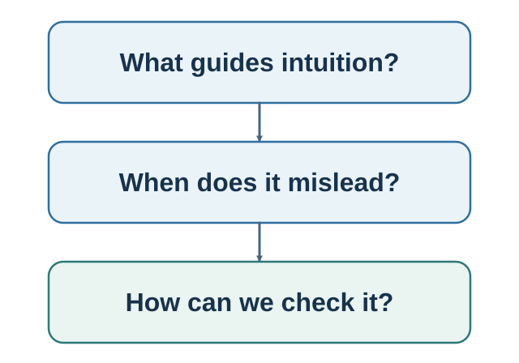

Part II. Judgment Under Uncertainty
How useful shortcuts become error—and how statistical discipline makes beliefs answerable to evidence.

The progression is mechanism-first: fast and frugal judgment; intuitive likelihood; belief protection; contextual comparison; framing; accessibility and ease; conditional probability and Bayes; then sampling, regression, randomness, and calibration. Framing remains distinct because changing the representation of a choice is not identical to supplying an anchor or comparison.
Guiding questions
- Which cue or easier question produced the intuitive answer?
- Does the cue fit an environment with stable patterns and useful feedback?
- Which denominator, reference class, comparison, or disconfirming observation is missing?
Bridge
A disciplined probability is still not a decision. The next part asks how consequences, reference points, lived samples, time, habits, and well-being turn judgment into a life.